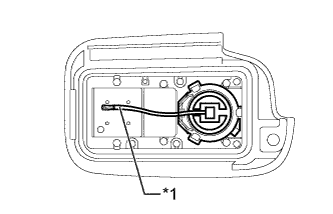
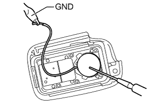
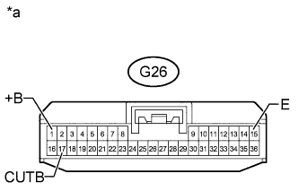

ENTRY AND START SYSTEM (for Entry Function) > All Door Entry Lock/Unlock Functions and Wireless Functions do not Operate |
| 1.INSPECT BATTERY VOLTAGE |
Measure the voltage of the battery.
| NEXT | |
| 2.CHECK FOR DTC |
Open the driver side door using the mechanical key built into the electrical key transmitter.
Connect the intelligent tester and check for DTCs (Click here).
|
| ||||
| OK | |
| 3.CHECK POWER DOOR LOCK CONTROL SYSTEM |
When the door control switch on the multiplex network master switch assembly on the driver side door is operated, check that the doors unlock and lock according to the switch operation (Click here).
|
| ||||
| OK | |
| 4.CHECK ELECTRICAL KEY TRANSMITTER |
When another registered electrical key transmitter is used, check that the wireless and entry functions operate normally (Click here).
| Result | Proceed to |
| Entry function operates | A |
| Entry function does not operate | B |
|
| ||||
| A | |
| 5.CHECK ELECTRICAL KEY TRANSMITTER (LED) |
Check that the transmitter LED illuminates 3 times when a switch is pressed 3 times.
| Result | Proceed to |
| Transmitter LED does not illuminate when switch is pressed 3 times | A |
| Transmitter LED illuminates 3 times when switch is pressed 3 times | B |
| Transmitter LED does not illuminate second or third time | C |
|
| ||||
|
| ||||
| A | |
| 6.INSPECT TRANSMITTER BATTERY (VOLTAGE) |
|  |
Remove the battery from the electrical key transmitter that does not operate (Click here).
Attach a lead wire (0.60 mm [0.027 in.] in diameter or less including wire sheath) with tape or equivalent to the negative terminal.
| *1 | Lead Wire |
Carefully pull the lead wire out from the position shown in the illustration and install the previously removed transmitter battery.
|  |
Measure the voltage of the transmitter battery.
| Tester Connection | Condition | Specified Condition |
| Battery positive (+) - Battery negative (-) | Engine switch off, all doors closed and lock sensor touched | 2.2 to 3.2 V |
|
| ||||
| OK | ||
| ||
| 7.CHECK WAVE ENVIRONMENT |
Bring the electrical key transmitter near the door control receiver and perform a wireless and entry function operation check.
|
| ||||
| OK | ||
| ||
| 8.CHECK POWER SOURCE |
When the power source mode is off, check that the functions other than the entry functions recognize the power source mode as being off.
|
| ||||
| OK | |
| 9.CHECK HARNESS AND CONNECTOR (CERTIFICATION ECU - BATTERY AND BODY GROUND) |
|  |
Disconnect the G26 ECU connector.
Measure the voltage according to the value(s) in the table below.
| Tester Connection | Condition | Specified Condition |
| G26-17 (CUTB) - Body ground | Always | 11 to 14 V |
| G26-1 (+B) - Body ground | Always | 11 to 14 V |
Measure the resistance according to the value(s) in the table below.
| Tester Connection | Condition | Specified Condition |
| G26-15 (E) - Body ground | Always | Below 1 Ω |
| *a | Front view of wire harness connector (to Certification ECU) |
|
| ||||
| OK | |
| 10.CHECK HARNESS AND CONNECTOR (DOOR CONTROL RECEIVER - CERTIFICATION ECU AND BODY GROUND) |
Disconnect the R20 door control receiver connector.
Disconnect the G27 certification ECU connector.
Measure the resistance according to the value(s) in the table below.
| Tester Connection | Condition | Specified Condition |
| R20-4 (+5) - G27-5 (RCO) | Always | Below 1 Ω |
| R20-5 (DATA) - G27-15 (RDA) | Always | Below 1 Ω |
| R20-2 (RSSI) - G27-16 (RSSI) | Always | Below 1 Ω |
| R20-1 (GND) - Body ground | Always | Below 1 Ω |
| R20-4 (+5) or G27-5 (RCO) - Body ground | Always | 10 kΩ or higher |
| R20-5 (DATA) or G27-15 (RDA) - Body ground | Always | 10 kΩ or higher |
| R20-2 (RSSI) or G27-16 (RSSI) - Body ground | Always | 10 kΩ or higher |
|
| ||||
| OK | |
| 11.CHECK DOOR CONTROL RECEIVER (OPERATION) |
Temporarily replace the door control receiver with a new or normally functioning one (Click here).
Check that the wireless and entry functions operate normally.
|
| ||||
| OK | ||
| ||